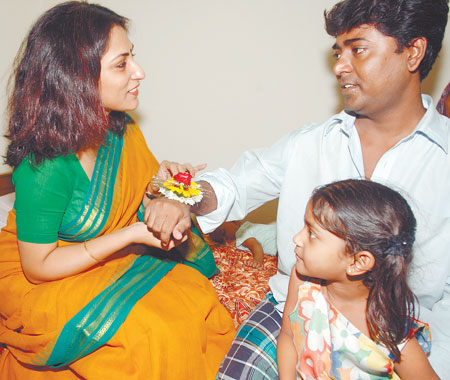

Kutubuddin
received well in Kolkata
By Ajoy Roy "Dangar Mukh" (face of riot) famous Kutubuddin and his family were well received at Calcutta. Yesterday (12th August) congress leaders went to his residence greeting him to Calcutta. Fastening thread of Rakhi on the wrist of Kutubuddin congress leaders urged every one not to do any politics with Kutubuddin's arrival in Kolkata. Let every one treat the issue from humanitarian angle, the leaders urged. Yesterday was the day of 'Rakhi bandhan' (a thread fastened on a wrist), a symbol of love and harmony. This was a tradition of Rajputs- when a girl fastens Rakhi-thread to a wrist of a man they become sister and brother whatever religions they belong to. Rabindranath popularized this practice in Bengal during the Banga-Vanga movement of 1905. Rupa Ganguli, a famous Kolkata actress fastening a Rakhi-thread yesterday around right wrist of Kutubuddin became his elder sister (didi) and asked him whenever he needs anything he should get in touch with her as his didi. Needless to say this brought tears in his eyes while his lovely daughter watching the touchy seen sitting beside his father.  But all is not well. Although every one is telling 'Kutub's arrival in Calcutta should not be mixed up with petty party politics. But politics have begun. Gujrat government has already charged WB government for playing politics with Kutuibuddin issue by offering him shelter in Kolkata. The government charged the move was purely political with an attempt to belittle Gujtat's image. BJP president of West Bengal raised similar protests. Yesterday, 12th August Momata Benerjee, Trinomul Congress President in a meeting arranged on the day of 'Rakhi Bandhan' charged CPM with the allegation that they are doing politics even with 'communal harmony' (sampradayik sampriti). She further alleged, 'for election propaganda CPM have brought Kutubuddin here. But I want him to stay here in peace. I will see him soon. but not to do politics- only for the cause of humanism. I have already asked Javed Bhai to get in touch with Kutubuddin', said Momota.
|
||||